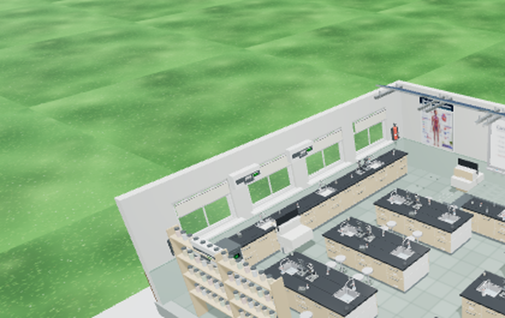
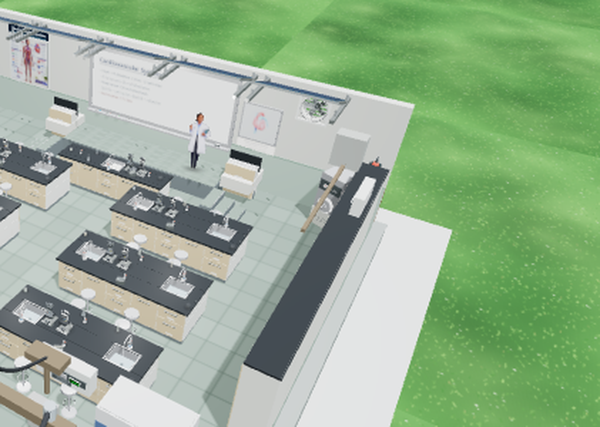
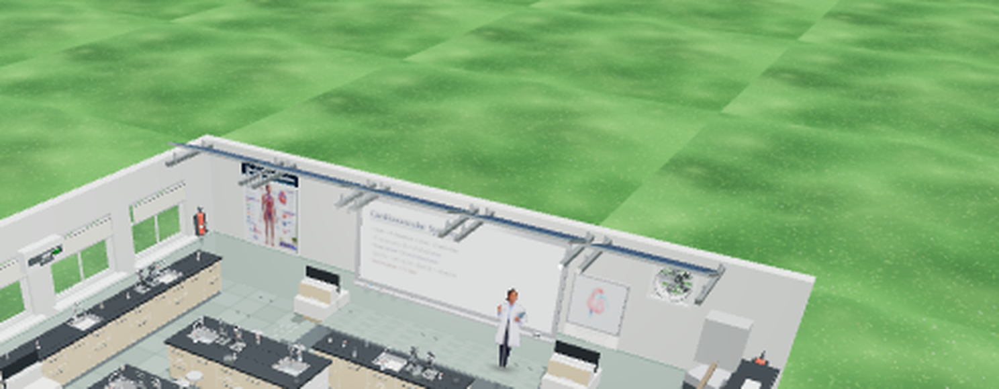
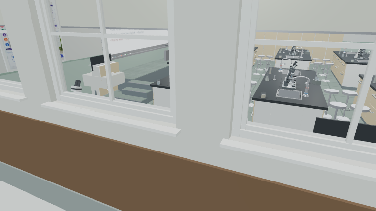
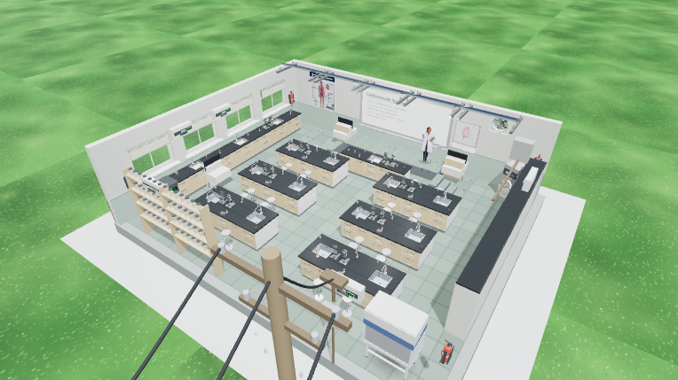
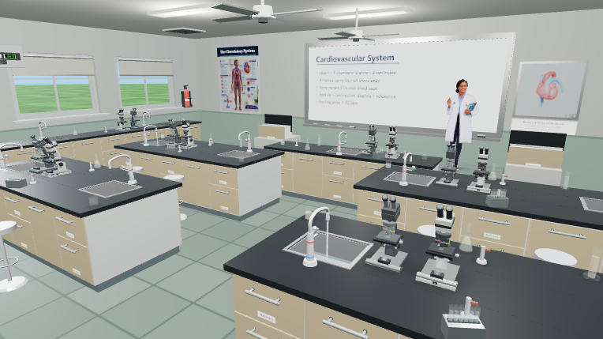
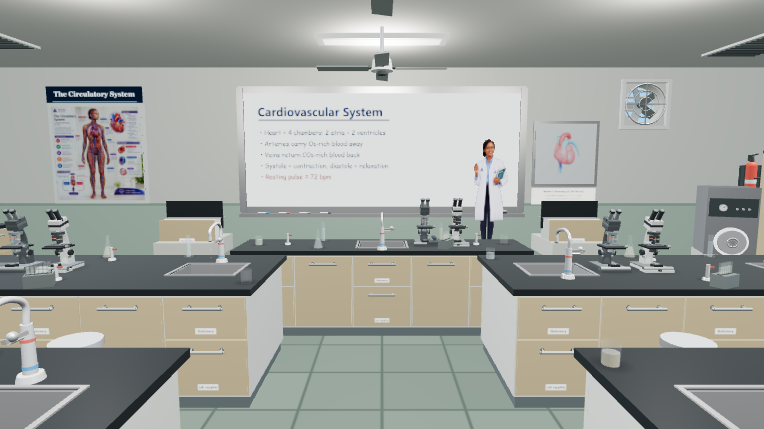
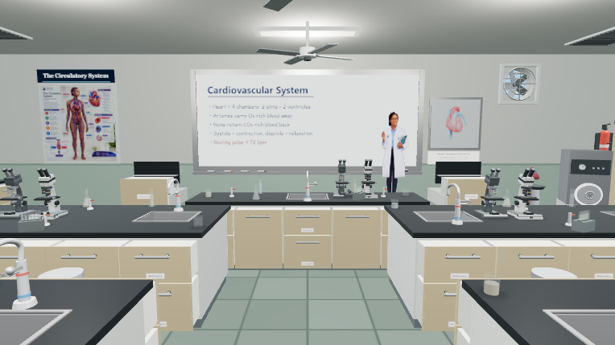

Biology lab — verification captures (crops)
Cutaway render (764×429) cropped and upscaled 3× — coat rails, curtains, drawers.
Cutaway — LEFT wall: windows + coat rails between them
Cutaway — RIGHT side (wall shell hidden; rail/coats seen from behind)
Cutaway — front whiteboard wall
Full views
view=wall — left wall from outside (windows, curtains)
view=cutaway — bird's eye
view=overview — default angle
view=aisle — benches: drawers, stools
view=aisle + drawers=open